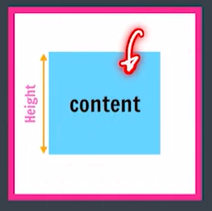
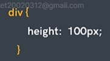
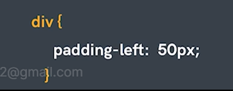

Box Model in CSS
- Height
- Width
- Border
- Padding
- Margin
Height
By default, it sets the content area height of the
element


Width
By default, it sets the content area width of the
element
4
Border
Used to set element's broder.
- border-width
- border-style
- border-color
-
Border Short hand
-
Border Sides :- To control individual sides of border
- border-left
- border-right
- border-top
- border-bottom
Border Radius
Used to round the corners of an element's outer border edge.

Padding
- padding-left
- padding-right
- padding-top
- padding-bottomt

Padding Shorthand

Margin
To set spacing on the outside of border
- margin-left
- margin-right
- margin-top
- margin-bottomt